MySQL query
1.How we can see existing database in mysql.
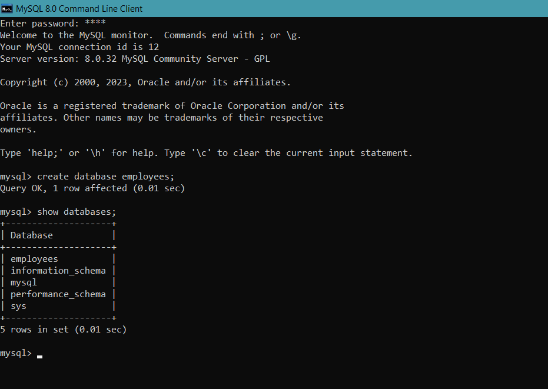
2.How we can create database.
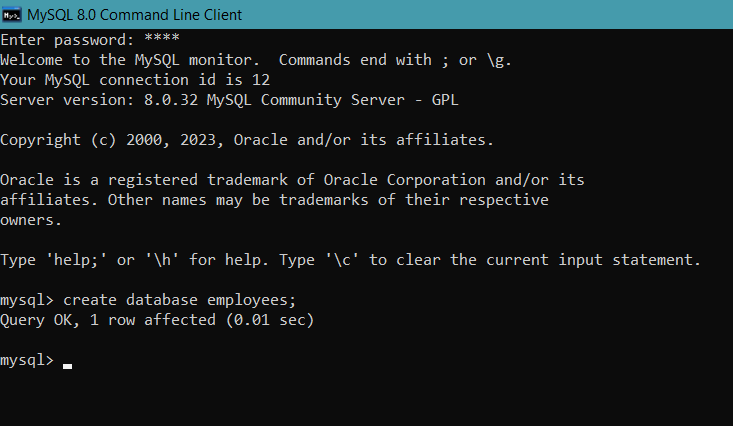
3.How we can delete a database.
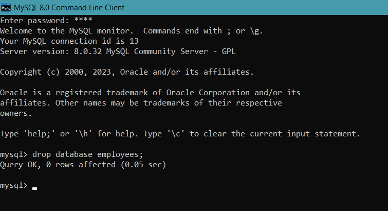
4.How we can use an existing database.
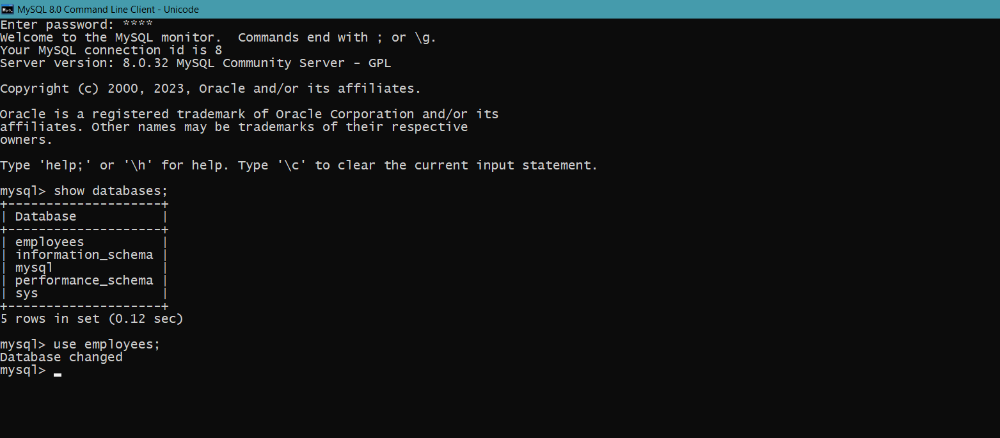
5.How we can create table in the database.
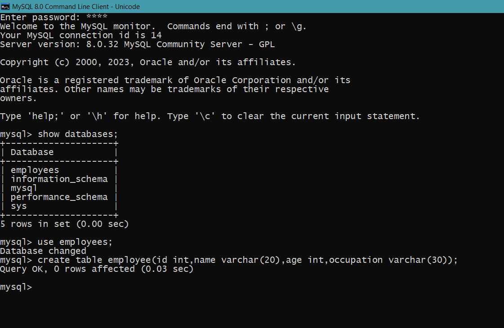
6.How we can see the structure of existing table.
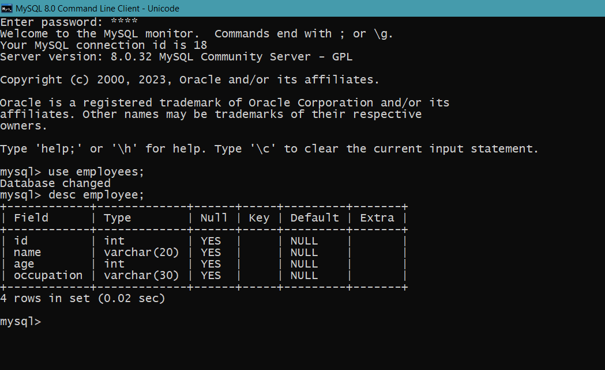
7.How we can delete a table.
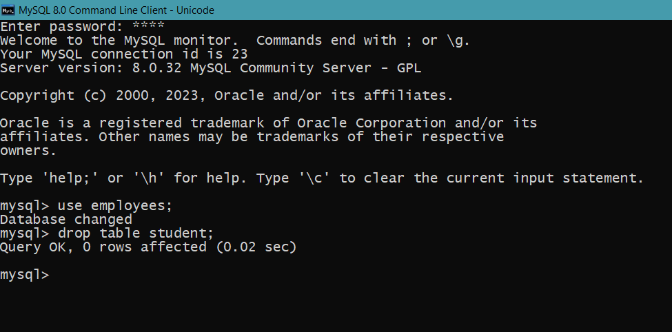
8.How we can insert data in the table.
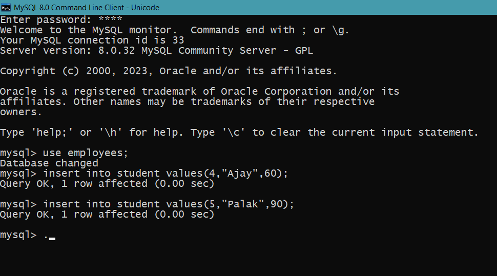
9.How we can delete all the data of the table.
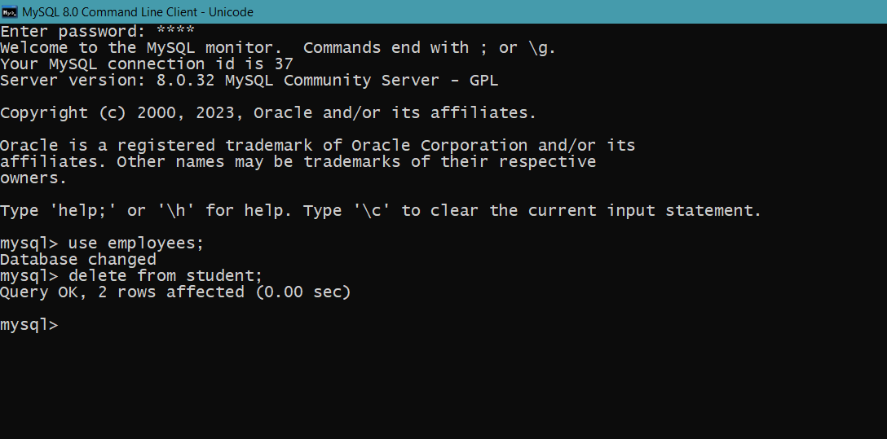
10.To delete all the rows from the table we can use a DDL command also.
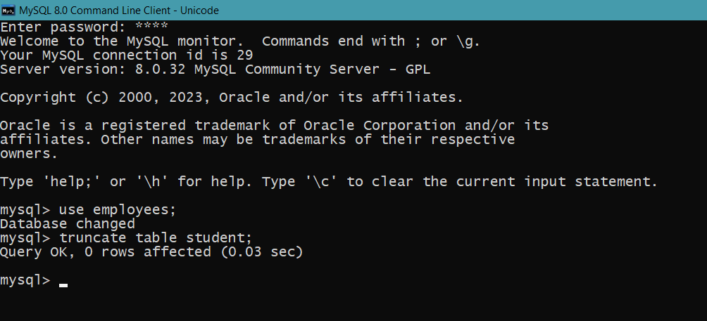
11.How we can update the data of the table.
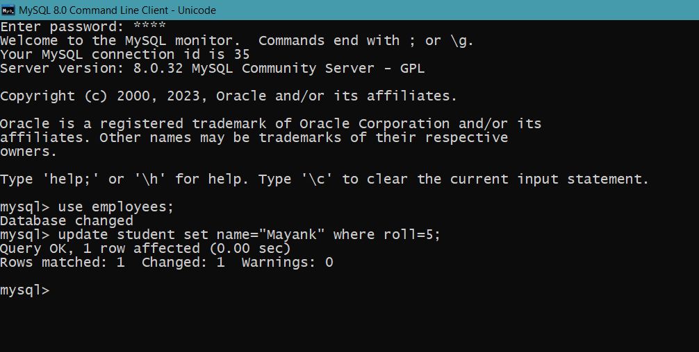
12.How we can select and extract data from table (all column & all rows).
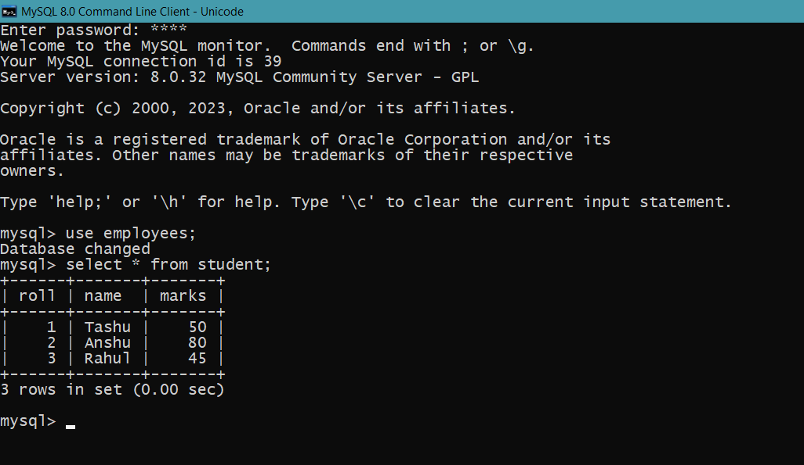
13.To see selective column of the table (specific column,all rows).
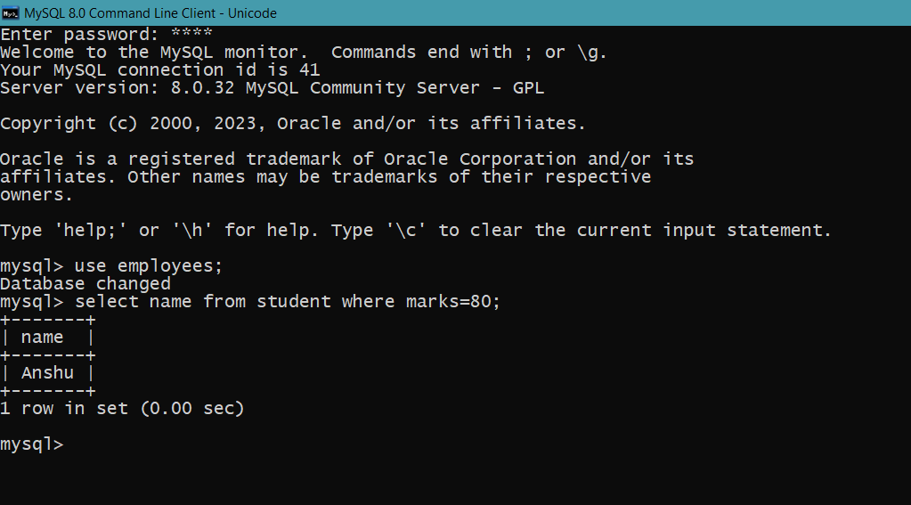
14.Find the record of the student whose roll in(1,3,4).
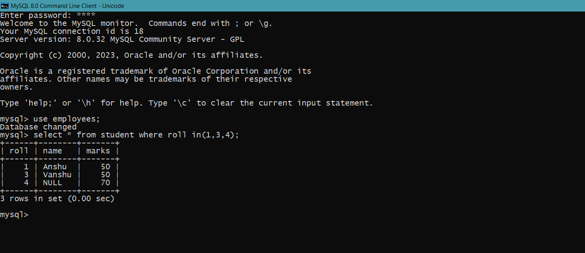
15.Find out the record of thr student whose name is start with A.
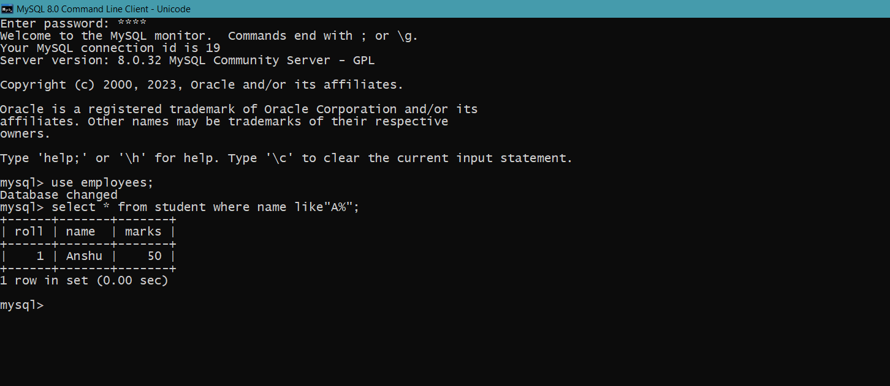
16.To create a table from another table we will use the create command with select command.
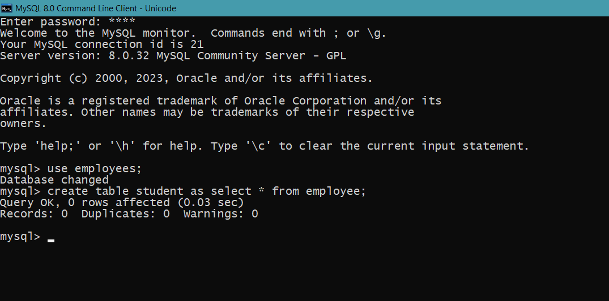
17.How we can sort the data of table.
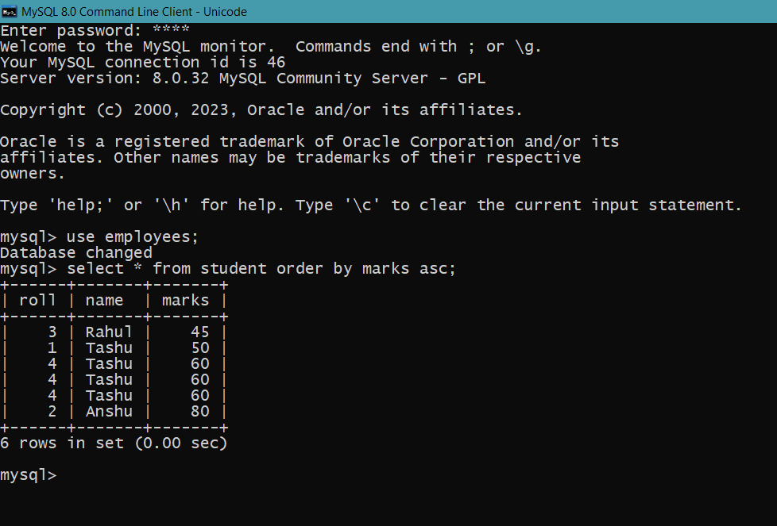
18.Find out the name of the student who is having maximum marks.
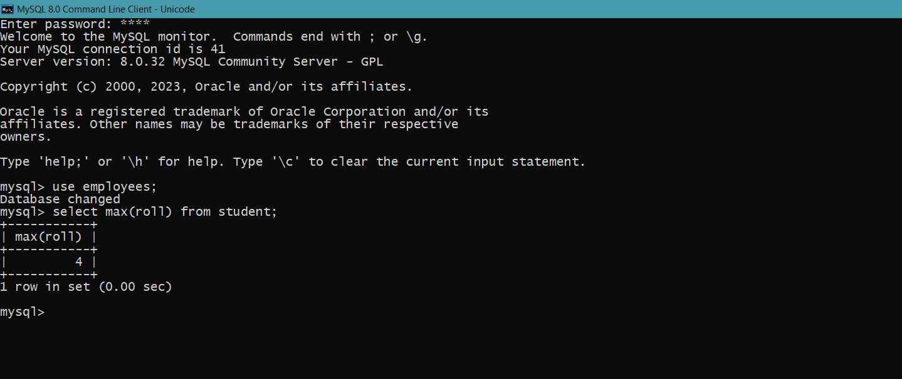
19.How we ccan see existing tables in database.
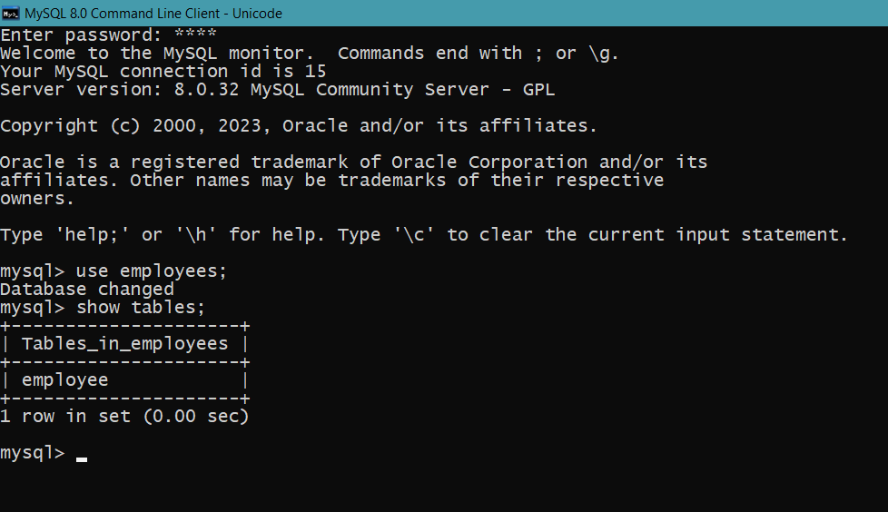
20. Find the record of the student table whose name contain null values.
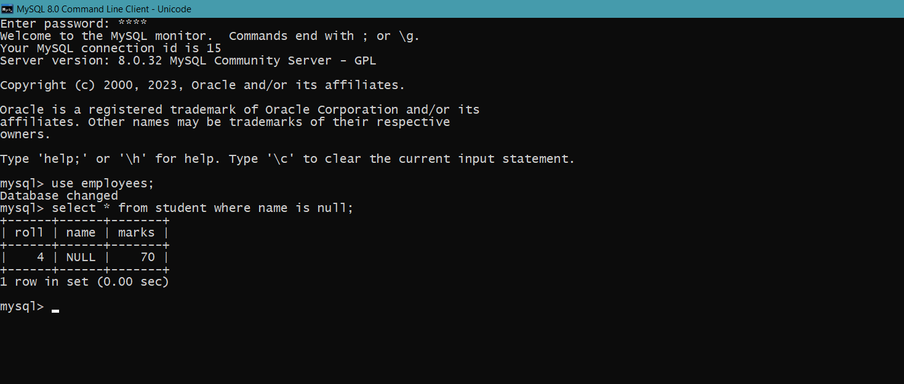